Fit5171 note
Exam review#
Prepare for following weeks thoroughly: 4, 5, 6, 8, 9, 10, 11
+ Test strategy, test plan, TDD
+ Blackbox Testing (aka functional testing)
+ Boundary Value Testing (BVT)
+ normal/robust, weak/normal
+ Equivalent Class Testing (ECT)
+ Decision Table Testing (DTT)
+ White-box Testing (aka structural testing)
+ Program graph
+ DD-path graph
+ MM-Path graph
+ Basis Path testing
+ Cyclomatic complexity
week 1#
TDD#
TDD stands for Test Driven Development, which is a software development process that follows a specific cycle. Here are the steps in the TDD cycle: 当然！TDD 代表 测试 驱动 开发， 是 一个 遵循 特定 周期 的 软件 开发 过程。以下是TDD周期中的步骤： 1. Add a test: The first step in TDD is to write a test. The test should be a small, focused piece of code that verifies a specific behavior or feature of the application.添加测试：TDD 的第一步是编写测试。测试应该是一小段重点代码，用于验证应用程序的特定行为或功能。 2. Run the test: Once you have written the test, you should run it to verify that it fails. If it passes, then either the test or the code under test is incorrect.运行测试：编写测试后，应运行它以验证它是否失败。如果通过，则测试或被测代码不正确。 3. Write the code: After the test fails, you need to write the minimum amount of code required to make the test pass. 编写代码：测试失败后，您需要编写使测试通过所需的最少代码量。 4. Run all tests: Once you have written the code, you need to run the test suite again to make sure that everything continues to work correctly.运行所有测试：编写代码后，需要再次运行测试套件以确保一切继续正常工作。 5. Refactor the code: Once the test suite is passing, you can then begin to refactor the code to make it more efficient, maintainable, and extensible.重构代码：测试套件通过后，可以开始重构代码，使其更高效、更易于维护和可扩展。 6. Repeat: You should then repeat this cycle, adding new tests and features, and refactoring the code as needed until the software is complete.重复：然后，应重复此循环，添加新的测试和功能，并根据需要重构代码，直到软件完成
Comparison of different level of testing#
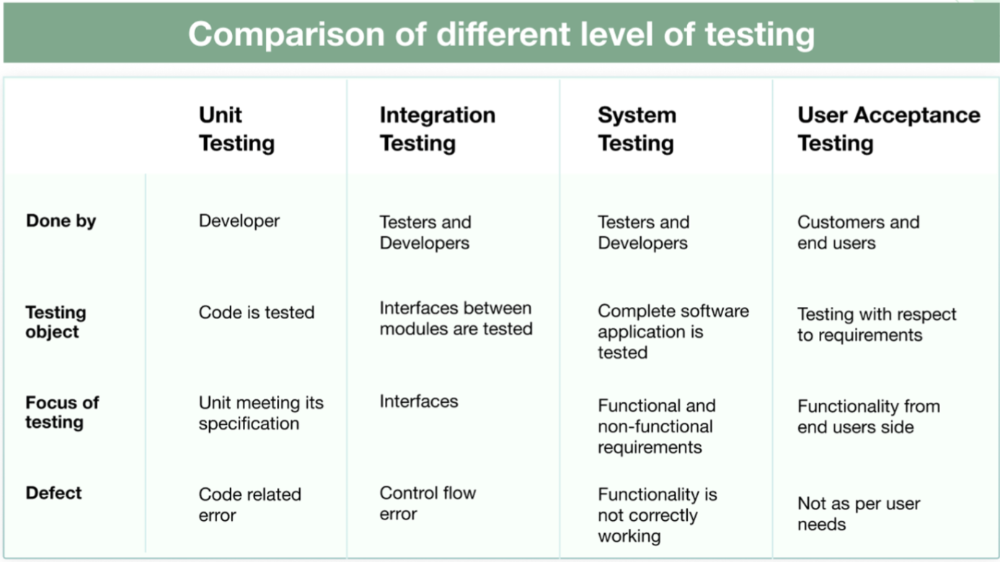
TDD: pros & cons#
| Advantage 优势 | Disadvantage |
|---|---|
| More tests, less debugging 更多测试，更少调试 |
Difficult in certain scenarios (UI, database, network) 在某些情况下（UI、数据库、网络）很难 |
| More productive 更高效 | Needs management support 需求管理支持 |
| Validates not only code, but also design 不仅验证代码，还验证设计 |
Developer blind spots 开发人员盲点 |
| Better test coverage, greater confidence 更好的测试覆盖率，更大的信心 |
False sense of security 虚假的安全感 |
| Better code structure 更好的代码结构 | Maintenance overhead for (bad) tests （不良）测试的维护开销 |
unit test#
A unit test is a type of automated test that is designed to validate the behavior of a single unit of code, typically a method or function. The goal of unit testing is to verify that the code under test works as expected and adheres to its specified requirements. 单元测试是一种自动测试，旨在验证单个代码单元（通常是方法或函数）的行为。单元测试的目标是验证待测试的代码是否按预期工作并遵守其指定的要求。 Unit tests are typically written using a testing framework, which provides a set of tools and methods for defining test cases and verifying their results. In Java, popular testing frameworks include JUnit and TestNG. 单元测试通常使用测试框架编写，该框架提供了一组用于定义测试用例和验证其结果的工具和方法。在Java中，流行的测试框架包括JUnit和TestNG。 Unit tests should ideally be written using a suite of repeatable and isolated tests that verify different inputs, edge cases, and outputs. Because unit tests are automated, they are also faster and more reliable than manual testing. They can be executed either as part of a continuous integration pipeline or on-demand during development. 理想情况下，单元测试应使用一套可重复和隔离的测试来编写，这些测试验证不同的输入、边缘情况和输出。由于单元测试是自动化的，因此它们也比手动测试更快、更可靠。它们可以作为持续集成管道的一部分执行，也可以在开发期间按需执行。
Benefits of unit testing#
- Identify defects early (at development time) Otherwise small defects will lead to larger problems
- Allows easy defect isolation
- Improves confidence of code
- Encourage code review
week 2#
JUnit Basics#
JUnit tests are also called test methods in a test class Naming convention of test classes: name of class under test + Test E.g., ShoppingCartTest.java for ShoppingCart.java
Test names should be meaningful and reflect purpose E.g., shouldReturnTrueWhenUsersHaveSameEmail()
Test Annotations#
-
@BeforeEach: This annotation is used to mark a method that should be run before each individual test case. This is typically used to set up any necessary test fixtures or dependencies before running the test.
@BeforeEach：此注释用于标记应在每个测试用例之前运行的方法。这通常用于在运行测试之前设置任何必要的测试夹具或依赖项。 -
@AfterEach: This annotation is used to mark a method that should be run after each individual test case. This is typically used to clean up any resources that were created during setup, or to reset the state of the system under test.
@AfterEach：此注释用于标记应在每个单独的测试用例之后运行的方法。这通常用于清理在安装过程中创建的任何资源，或重置受测系统的状态。 -
@BeforeAll: This annotation is used to mark a method that should be run once, before any test cases are executed. This is typically used to set up any resources or dependencies that will be used across all tests.
@BeforeAll：此注释用于标记在执行任何测试用例之前应运行一次的方法。这通常用于设置将在所有测试中使用的任何资源或依赖项。 -
@AfterAll: This annotation is used to mark a method that should be run once, after all test cases have been executed. This is typically used to clean up any resources or dependencies that were created in the@BeforeAllmethod.
@AfterAll：此注释用于标记在执行所有测试用例后应运行一次的方法。这通常用于清理在@BeforeAll方法中创建的任何资源或依赖项。
Test Assertions#
Assertions allow us to compare expected vs actual behaviours (output values, exceptions, etc.) 断言允许我们比较预期行为与实际行为（输出值、异常等） assertTrue() assertFalse() assertEquals() assertNotEquals() assertNull() assertNotNull() assertSame() assertNotSame() assertArrayEquals() assertThrows()
The difference between a test plan and a test strategy#
The difference between a test plan and a test strategy - Inspired Testing
| Test Plan 测试计划 | Test Strategy 测试策略 |
|---|---|
| A test plan for software project can be defined as a document that defines the scope, objective, approach and emphasis on a software testing effort 软件项目的测试计划可以定义为定义软件测试工作的范围、目标、方法和重点的文档 |
Test strategy is a set of guidelines that explains test design and determines how testing needs to be done 测试策略是一组指南，用于解释测试设计并确定需要如何进行测试 |
| Components of Test plan include- Test plan id, features to be tested, test techniques, testing tasks, features pass or fail criteria, test deliverables, responsibilities, and schedule, etc. 测试计划的组件包括 - 测试计划 ID、要测试的功能、测试技术、测试任务、功能通过或失败标准、测试可交付成果、职责和时间表等。 |
Components of Test strategy includes- objectives and scope, documentation formats, test processes, team reporting structure, client communication strategy, etc. 测试策略的组成部分包括目标和范围、文档格式、测试流程、团队报告结构、客户沟通策略等。 |
| Test plan is carried out by a testing manager or lead that describes how to test, when to test, who will test and what to test 测试计划由测试经理或主管执行，描述如何测试、何时测试、谁将测试以及测试什么 |
A test strategy is carried out by the project manager. It says what type of technique to follow and which module to test 测试策略由项目经理执行。它说明了要遵循哪种类型的技术以及要测试的模块 |
| Test plan narrates about the specification 测试计划叙述有关规范 |
Test strategy narrates about the general approaches 测试策略叙述了一般方法 |
| Test plan can change 测试计划可以更改 | Test strategy cannot be changed 无法更改测试策略 |
| Test planning is done to determine possible issues and dependencies in order to identify the risks. 执行测试计划以确定可能的问题和依赖项，以便识别风险。 |
It is a long-term plan of action.You can abstract information that is not project specific and put it into test approach 这是一项长期行动计划。您可以抽象出非项目特定的信息并将其放入测试方法 |
| A test plan exists individually 单独存在测试计划 |
In smaller projects, the test strategy is often found as a section of a test plan 在较小的项目中，测试策略通常作为测试计划的一部分。 |
| It is defined at project level 它是在项目级别定义的 |
It is set at organization level and can be used by multiple projects 它是在组织级别设置的，可以由多个项目使用 |
week 3 Discrete maths#
label#
- And(∧) 与；且
- Or(∨) 或
- Implies(⇒) 实质蕴含
- Equiv(⇔)实质等价
- ⊢ 推导出 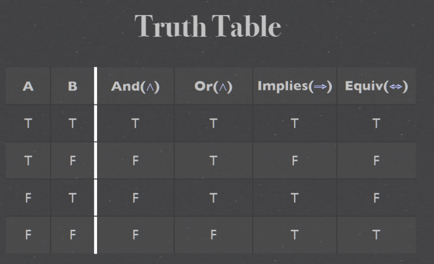
Predicate Logics 谓词逻辑#
- Universal (∀) 任意
- existential (∃) 存在
- Set（P）集合
- ∃x (P(x) ⋀ Q(x)) 在P，Q两个集合中都存在x
set#
- 无顺序，不重复 == Java重的set概念
- {1,2,3,4} {x : N | x ≤ 64}
- N：非负整数集合或自然数集合{0,1,2,3,...}
- Z：整数集合{...,-1,0,1,...}
- Q：有理数集合
- R：实数集合(包括有理数和无理数）
- ∅ ：空集（不含有任何元素的集合）
- N*或N+：正整数集合{1,2,3,...}
- Membership: 属于
- Set inclusion: Subset: 子集 Proper subset:真子集
- Set cardinality:
#A= 3 集合元素个数 ｜A｜ 
Power set P#
A power set is set of all subsets, empty set and the original set itself 幂集是所有子集、空集和原始集本身的集合
+ $∀X • X$ is a set, $Px = {A|A ⊆ X}$
+ for every X, Px (which is defined as the set of all subsets of X) is a set.对于每个 X，Px（定义为 X 的所有子集的集合）是一个集合。
+ power set of A = {1, 2} is P(A) = {{}, {1}, {2}, {1, 2}}
Set operations 集合运算#
- Union并集 : $A 𝕌 B$ The set containing all the elements of which all other sets are subs
- Intersection交集 : $A∩B$ Items common in A,B
- Difference : 差集 A - B; A = {1, 2, 3, 4, 5, 6} and B = {3, 4, 5, 6, 7, 8},A – B = {1, 2},B – A = {7, 8},
- Cartesian product笛卡尔积 :
{a, b} ⇥ {0, 1} = {(a, 0), (a, 1), (b, 0), (b, 1)}
Relations ( ⇔) 两个集合间的逻辑联系#
Relations (R) are defined over sets A relation is a collection of ordered pairs, which contains an object from one set to the other set 关系 (R) 是在集合上定义的 关系是有序对的集合，其中包含从一个集合到另一个集合的对象 Can be one-to-one, one-to-many or many-to-one, many-to-many
The Cartesian product deals with ordered pairs, so the order in which the sets are considered is 笛卡尔积处理有序对，因此考虑集合的顺序是 friends : Person ⇔ Person
$X х Y = {(x, y)} | x ∈ X and y ∈ Y} Where X х Y ≠ Y х X$
Using n(A) for the number of elements in a set A, we have $n(X х Y) = n(X) х n(Y)$
functions (→ )#
函数是一种特殊的关系类型。这种特殊类型的关系描述了一个元素如何映射到另一个集合或同一个集合中的另一个元素
It is a relation that defines the set of inputs to the set of outputs. Note that all functions are relations, but not all relations are functions 它是定义输入集到输出集的关系。请注意，所有函数都是关系，但并非所有关系都是函数
→ implies/ when used in functions, it symbolises mapping A→B, if A is true then B is also true. If A is false then nothing said about B
age : Person N birthday : Person → Date
Undirected graphs 无向图#

$G = (V, E)$ 定义称二元组G=(V,E)是一个无向图(undirected graph)
+ V: a non-empty set of nodes {n1, n2 , n3, ..., nm } V是一个非空有限集合
+ E: a set of edges {e1, e2, ..., ep}, where each ek = (ni, nj) E是V中元素的无序对所组成的集合
+ 把V的元素叫做图的顶点 (vertex)，E的元素叫做图的边 (edge)。V(G)表示图G的顶点集，E(G)表示图G的边集。若 |V(G)|=n，则称G为n阶图
Representation & Degree#
V = {n 1 , n 2 , n 3 , n 4 , n 5 , n 6 , n 7}
E = {e1 , e2 , e3 , e4 , e 5 , } = {(n 1 , n 2 ), (n 1 , n 4 ), (n 2 , n 5 ), (n 3 , n 4 ), (n 4 , n 6 )}
Degree of node : No. of edges that have that node as an endpoint
degree(n 1 ) = 2, degree(n 4 ) = 3, degree(n 7 ) = 0
+ Degree 度， 节点边的数量 （环算作两条边）
+ Path路径，多条相连的边的组合 Nodes ni and nj are connected if they are in a path. A component is a maximal set of connected node 如果节点 ni 和 nj 在一条路径中，则它们是连通的 分量是连通节点的最大集合 Path(n1,n5) = (n1, n2, n5) = <e1, e4>
Directed graphs 有向图#
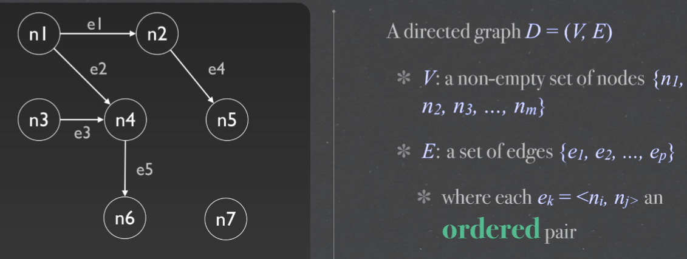
+ 头/原点 Source， indgree = 0
+ 终点 Sink， outdgree = 0
+ 入度 indgree 汇入节点的边的数量
+ 出度 outdgree 从节点引出的边的数量
Semi -Paths#
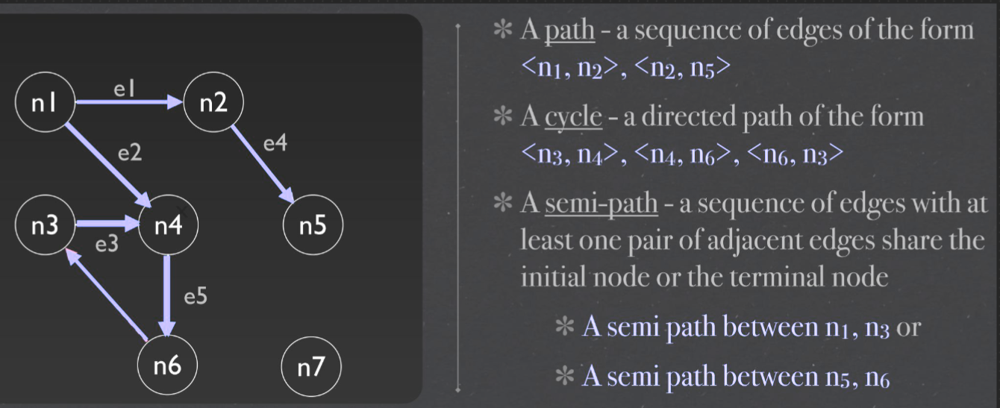
n-Connectedness#
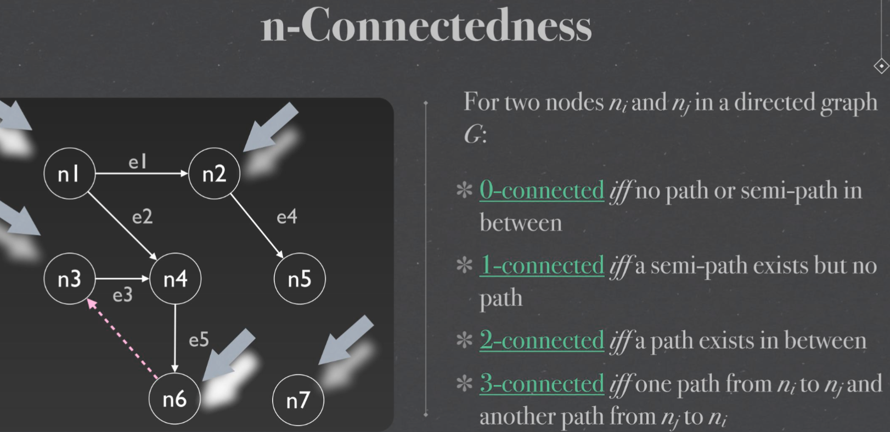
Strongly connected components 强连通分量#
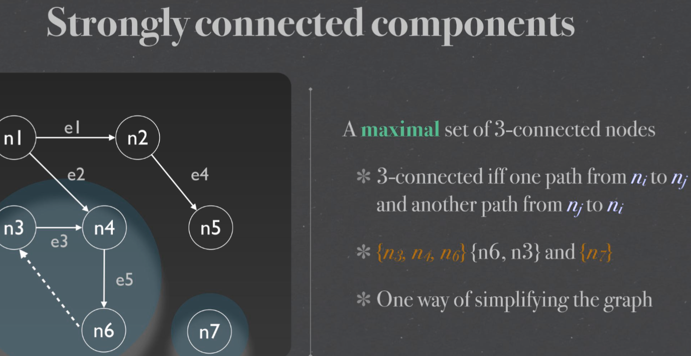
McCabe’s Cyclomatic complexity圈复杂度#
Cyclomatic Complexity in Software Testing (Example)
Cyclomatic Complexity - GeeksforGeeks
圈复杂度（Cyclomatic Complexity）是衡量计算机程序复杂程度的一种措施。它根据程序从开始到结束的线性独立路径的数量计算得来的.圈复杂度越高，代码就越难复杂难维护。坑就越大。
计算公式1：V(G)=E-N+2P。其中，E表示控制流图中边的数量，N表示控 制流图中节点的数量，P图的连接组件数目（图的组件数是相连节点的最大集合）
(G) = #E - #V + p — Strongly connected graph
V(G) = #E - #V + 2p — Not strongly connected graph
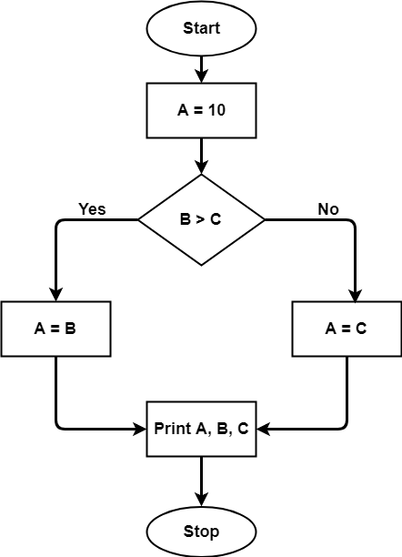
The cyclomatic complexity calculated for above code will be from control flow graph. The graph shows seven shapes(nodes), seven lines(edges), hence cyclomatic complexity is 7-7+2 = 2. 为上述代码计算的圈复杂度将来自控制流图。该图显示了七个形状（节点），七个线（边），因此圈复杂度为 7-7+2 = 2。
If (Condition 1)
Statement 1
Else
Statement 2
If (Condition 2)
Statement 3
Else
Statement 4
- Nodes (N): 节点 （N）：There are 6 nodes in the control flow graph.控制流图中有 6 个节点。
- Edges (E): 边缘 （E）：There are 7 edges in the control flow graph.控制流图中有 7 条边。
- Connected components (P):连接的组件 （P）There is 1 connected component in the control flow graph.控制流图中有 1 个连接的组件。
- M = E - N + 2P = 7 - 6 + 2(1) = 3
- Therefore, the cyclomatic complexity of this code is 3. This value represents the number of independent paths through the code, and can be used to estimate the number of test cases needed to achieve full code coverage. In this case, we determined that at least 4 test cases are needed to cover all possible branches, which is consistent with the cyclomatic complexity metric of 3.因此，此代码的圈复杂度为 3。此值表示通过代码的独立路径数，可用于估计实现完整代码覆盖所需的测试用例数。在这种情况下，我们确定至少需要 4 个测试用例来覆盖所有可能的分支，这与圈复杂度度量 3 一致。
This metric is useful because of properties of Cyclomatic complexity (M) –
由于圈复杂度 （M） –
1. M can be number of test cases to achieve branch coverage (Upper Bound)
M可以是测试用例的数量，以实现分支覆盖（上限）
2. M can be number of paths through the graphs. (Lower Bound)
M 可以是通过图形的路径数。（下限）
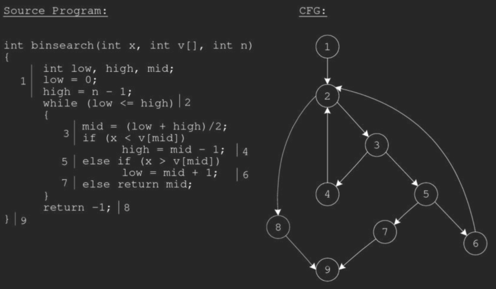
week 4#
黑盒测试 Blackbox#
- 黑盒代表盒子是不透明的
- 关注输入和输出，而忽略盒子里面的操作
- 有Functional 和Non-functional之分 Functional ：具体功能，登陆，注册等 Non-Functional：稳定性，安全性，易用性等
- Equivalence Partitioning Testers can divide possible inputs into groups or “partitions”
- Boundary Value Analysis Testers can identify that a system has a special response around a specific boundary value.
- Decision Table Testing Many systems provide outputs based on a set of conditions.
Normal Boundary Value Testing (NBVT) 边界值测试#

Robustness testing#
For each variable, we need to test its minimum and maximum values, which gives us 2n test cases. The total number of test cases required for the robust version of BVT is: 2n (minimum and maximum values) + 4n + 1 (normal values) 对于每个变量，我们需要测试它的最小值和最大值，这给了我们 2n 个测试用例。健壮版BVT所需的测试用例总数为：2n（最小值和最大值）+4n+1（正常值） 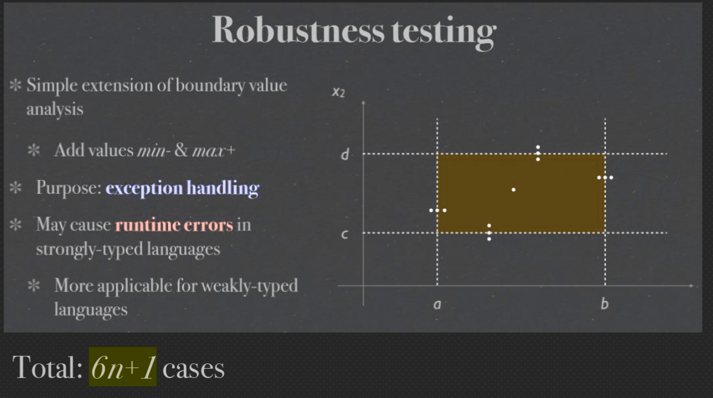
Worst case testing#
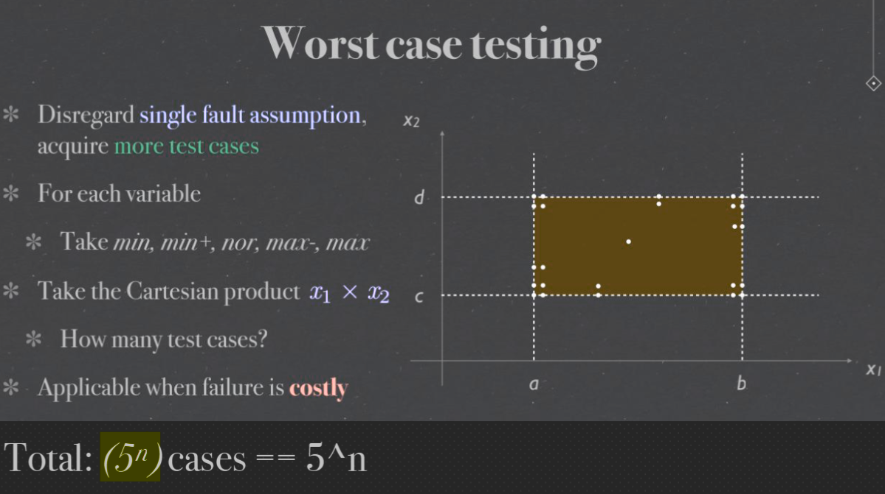
Robust worst-case testing#
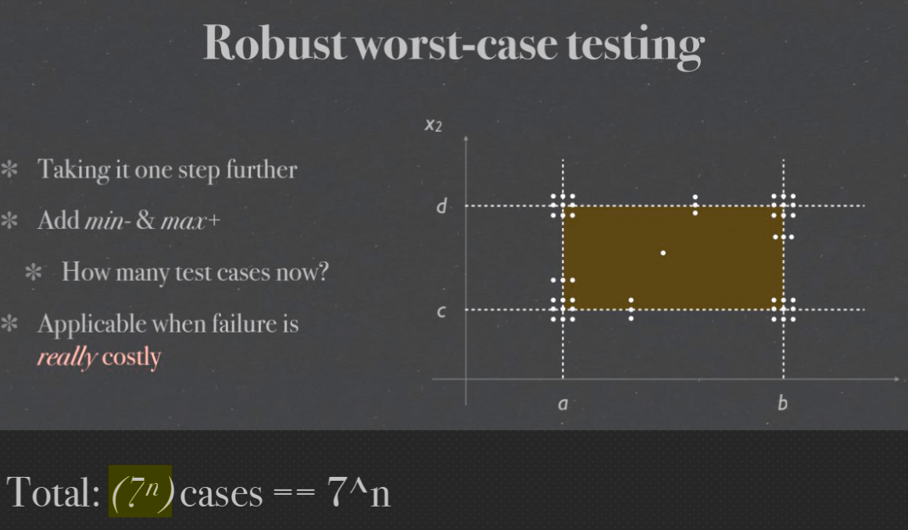
Equivalence class testing 等价类测试#
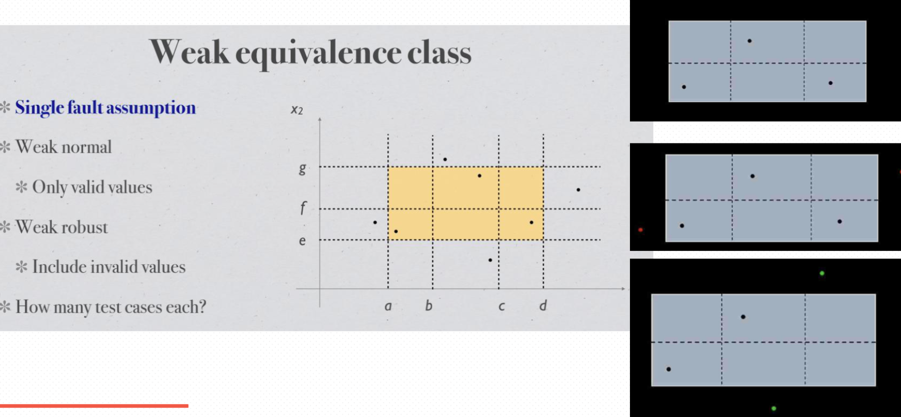

weak normal equivalence class testing#
Let Cx denote the equivalence classes of valid values for variable x (Cx is a set of equivalence classes). Then the number of test cases is max (#Cxi ), for xi ranging over all variables. That is, the maximum number of equivalence classes for all variables 令 Cx 表示变量 x 的有效值的等价类（Cx 是一组等价类）。那么测试用例的数量是最大的（#Cxi），因为 xi 遍及所有变量。即所有变量的最大等价类数
Weak robust equivalence class testing.#
We assume the same settings as in the previous question. Let Ixi denote the equivalence classes of invalid values for variable xi . Let n denote the number of variables. the number of tests is max (#Cxi ) + nXi=1(#Ixi ), for xi ranging over all variables. Basically, we include also the total number of test cases in the invalid areas for each variable. Note that cardinality of Ixi may not always be 2 since there may be gaps between valid equivalence classes 我们采用与上一个问题相同的设置。设 Ixi 表示变量 xi 的无效值的等价类。设 n 表示变量的数量。测试次数为 max (#Cxi ) + nX i=1 (#Ixi )，xi 遍及所有变量。基本上，我们还包括每个变量的无效区域中的测试用例总数。请注意，Ixi 的基数可能并不总是 2，因为有效等价类之间可能存在间隙
Decision table Testing#

how to make dtt#
in the example each of the three variables a, b and c is the length of a side from the range [1, 200]. Come up with test cases for weak normal equivalenceclass testing that cover the same expected outputs 在示例中，三个变量 a、b 和 c 中的每一个都是范围 [1, 200] 中的边的长度。提出涵盖相同预期输出的弱正态等价类测试的测试用例
equivalence classes:
+ D1 = {(a, b, c) | a = b = c}
+ D2 = {(a, b, c) | a = b ∧ a̸ = c ∧ c < a + b}
+ D3 = {(a, b, c) | a̸ = b ∧ a̸ = c ∧ b̸ = c ∧ a < b + c ∧ b < a + c ∧ c < a + b}
+ D4 = {(a, b, c) | a = b + c}
+ D5 = {(a, b, c) | a > b + c}
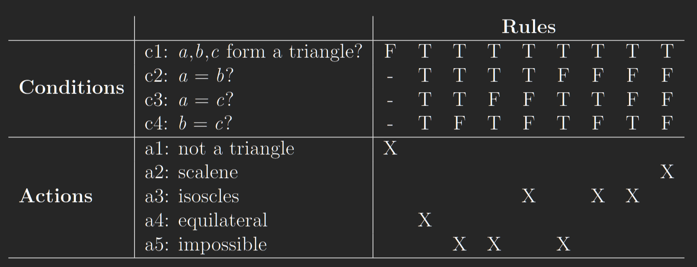
testing effort#

Difference Between Equivalence Class Testing & Boundary Value Analysis:#
Equivalence Class Testing: Complete Guide |Professionalqa.com
| Equivalence Class Testing 等效等级测试 |
Boundary Value Analysis 边界值分析 |
|---|---|
| 1. Equivalence Class Testing is a type of black box technique. 1. 等效类测试是一种黑盒技术。 |
1. Next part of Equivalence Class Partitioning/Testing. 1. 等效类分区/测试的下一部分。 |
| 2. It can be applied to any level of testing, like unit, integration, system, and more. 2.它可以应用于任何级别的测试，如单元，集成，系统等。 |
2. Boundary value analysis is usually a part of stress & negative testing. 2. 边界值分析通常是压力和负测试的一部分。 |
| 3. A test case design technique used to divide input data into different equivalence classes. 3. 一种测试用例设计技术，用于将输入数据划分为不同的等价类。 |
3. This test case design technique used to test boundary value between partitions. 3. 此测试用例设计技术用于测试分区之间的边界值。 |
| 4. Reduces the time of testing, while using less and effective test cases. 4.减少测试时间，同时使用更少和有效的测试用例。 |
4. Reduces the overall time of test execution, while making defect detection faster & easy. 4. 减少测试执行的总时间，同时使缺陷检测更快、更容易。 |
| 5. Tests only one from each partition of the equivalence classes. 5. 从等效类的每个分区中仅测试一个。 |
5. Selects test cases from the edges of the equivalence classes. 5. 从等效类的边缘选择测试用例。 |
| ## week 5 | |
| ### 白盒测试 Whitebox | |
| 1. 白盒代表盒子是透明的 | |
| 2. 不仅关注输入和输出，同时关注盒子内的代码结构 | |
| 3. Testing structure of the software | |
| 4. 将代码转换成数学模型 | |
| ### Program graph | |
| 1. 有向图 | |
| 2. 点Node代表 Statement | |
| 3. 边Edge代表 Flow | |
| 4. 多行Statement可浓缩 | |
|  |
| ### DD-path （Decision-to-decision path 决策到决策路径） | |
| 主要着眼测试覆盖率问题。程序有向图中存在分支，覆盖率考虑的是对各个分支情况的测试覆盖程度，因此对有向图中线性串行的部分进行压缩，在压缩图(即DD-路径)的基础上进行测试用例设计，用测试覆盖指标考察测试效果 | |
|  |
| ### Basic Path Test 基础路径测试 - 找出最佳测试路径 | |
|  |
| ## week6 | |
| ### Functional decomposition 功能分解 / Block Diagram 模块图 | |
| 1. 每一个方块代表了系统中一种功能 | |
| 2. 是软件设计的第一个草图 | |
|  |
| ### Integration Testing | |
| 1. System - hierarchically composed of units | |
| 2. Objectives - testing of interfacing and interaction of units To expose problems arising from the combination To find a working solution from components | |
| 3. 集成测试是在单元测试的基础上，测试在将所有的软件单元按照概要设计规格说明的要求组装成模块、子系统或系统的过程中各部分工作是否达到或实现相应技术指标及要求的活动。 也就是说，在集成测试之前，单元测试应该已经完成,集成测试中所使用的对象应该是已经经过单元测试的软件单元 | |
| #### Potential hazards | |
| + Internal - between components (Method invocation; Parameter; Method return) 单元间的接口，指的是代码间的相互调用，我们传递一些参数来判断测试调用有没有问题 | |
| + Interaction - at system boundary 集成后的功能，不同的功能之间是否会产生相互影响？ | |
| ### Integration testing approaches | |
| #### Decomposition-based 基于分解，功能分解，模块分解 | |
| 1. Big bang - all units together, no error localisation 大爆炸策略 一起运行 迅速 一次试运行成功率不大 问题定位和修改都比较困难 功能增强型项目 | |
| 2. Top down - stubs, early demo 从上至下 较早的验证了主要的控制和判断点 首先实现和验证一个完整的软件功能 桩的开发和维护时本策略大 底层组件的测试不够充分 适合产品控制结构相对清晰和稳定，产品的高层接口变化比较小，产品的底层接口未定义或者经常可能被修改，产品的控制组件具有较大的技术风险，需要尽早的被验证 | |
| 3. Bottom up - terminal, drivers 从下至上 集成测试开始阶段可能会并行的进行集成 驱动的开发工作量也很庞大。对于高层的验证被推迟到了最后，设计上的错误不能被及时发现 适用范围 底层接口比较稳定、变动较少的产品高层接口变化比较频繁的产品底层组件较早被完成的产品 | |
| 4. Sandwich - a combination of the above 2 在测试的时候，对目标层的上一层使用自顶向下的集成策略对目标的下一层使用自底向上的集成策略，最后测试在目标层会合 |
Call graph-based#
- Pairwise integration Instead of testing all possible combinations of inputs, pairwise integration testing only tests combinations of input pairs. identify defects or issues that arise due to the interactions between two components, while minimizing the number of test cases needed. 成对集成测试的目标是识别由于两个组件之间的交互而产生的缺陷或问题，同时最大限度地减少所需的测试用例数量。
- Neighbour integration testing only the interactions between adjacent modules that are directly connected to one another in the call graph. 仅测试在调用图中直接相互连接的相邻模块之间的交互。
Path-based#
In path-based integration testing, the system is tested for different combinations of inputs, and the resulting output paths are compared against the expected output paths. This technique aims to ensure that the system functions correctly when inputs are combined to achieve different outcomes. 在基于路径的集成测试中，测试系统的不同输入组合，并将生成的输出路径与预期的输出路径进行比较。该技术旨在确保当输入组合以实现不同的结果时，系统正常运行。
Module Execution Path (MEP)#
message method sequence of module execution paths
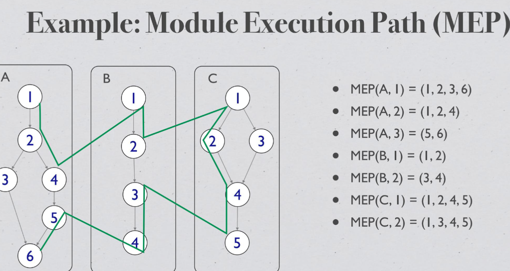
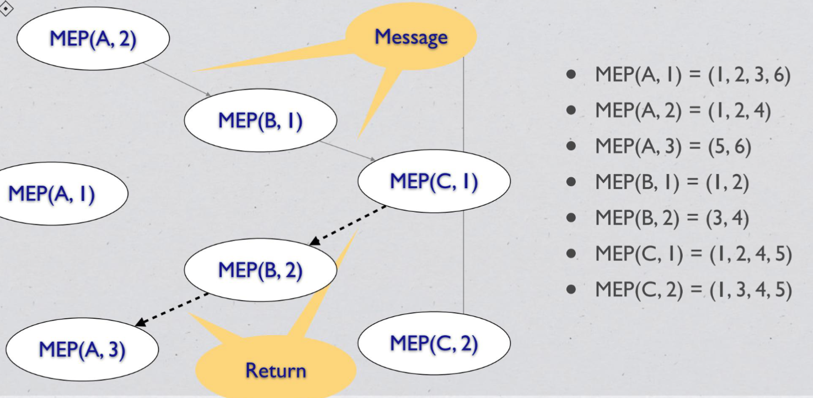
week8#
Software complexity metrics 软件（复杂度）度量 - Structure 结构度量#
- Control-flow structure: the sequence in which instructions are executed in a program.控制流结构：指令在程序中执行的顺序。
- Data-flow structure: the trail of a data item created or handled by a program. 数据流结构：一个程序中的数据项从创建到处理的轨迹。
- Data structure: the organization of the data itself, independent of the program. 数据结构：数据本身的组织，独立于程序。
A decomposition tree#
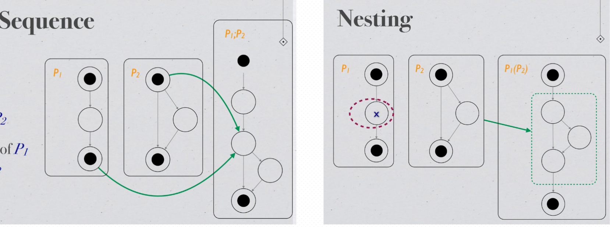
Sequence: P1;P2 - Sequence of P1 & P2 Merge the terminal node of P1 with the initial node of P2. P1;P2 - P1 & P2 的序列 将 P1 的终端节点与 P2 的初始节点合并
Nesting: P1(P2 , x) - nesting of P2 onto P1 at node x Replace x with P2 ,P1(P2 , x) - 在节点 x 处将 P2 嵌套到 P1 上 用 P2 替换 x
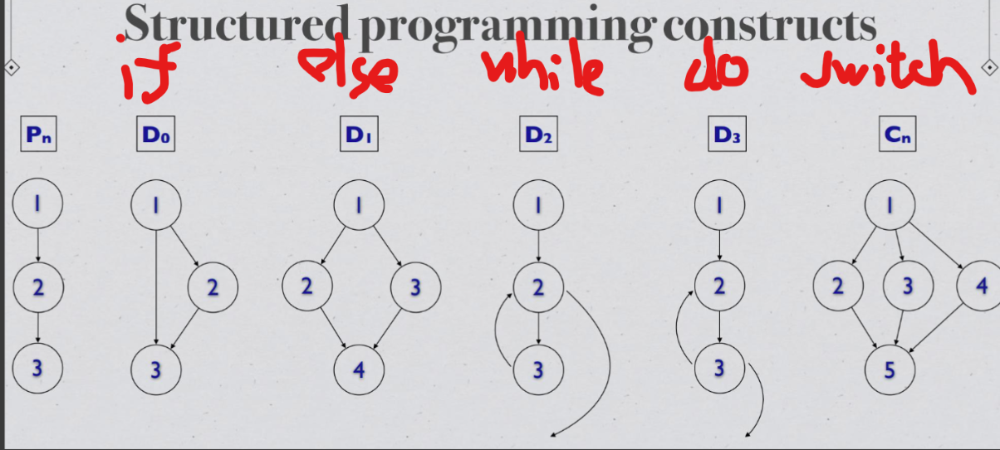
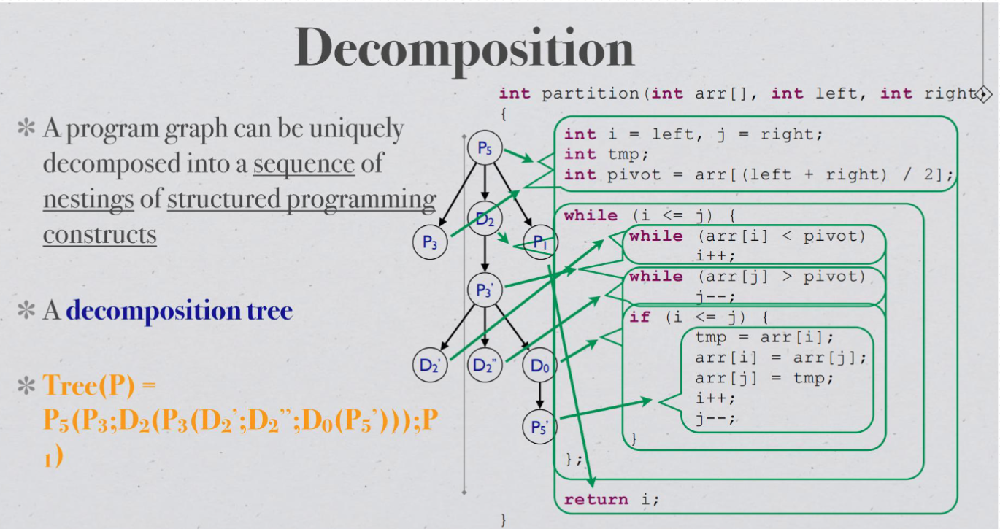

Morphology metrics#
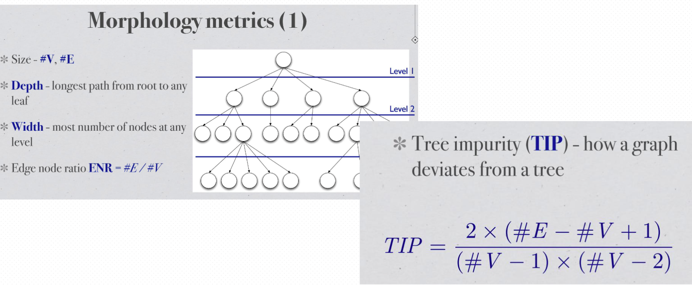
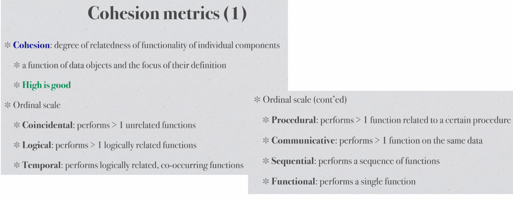
 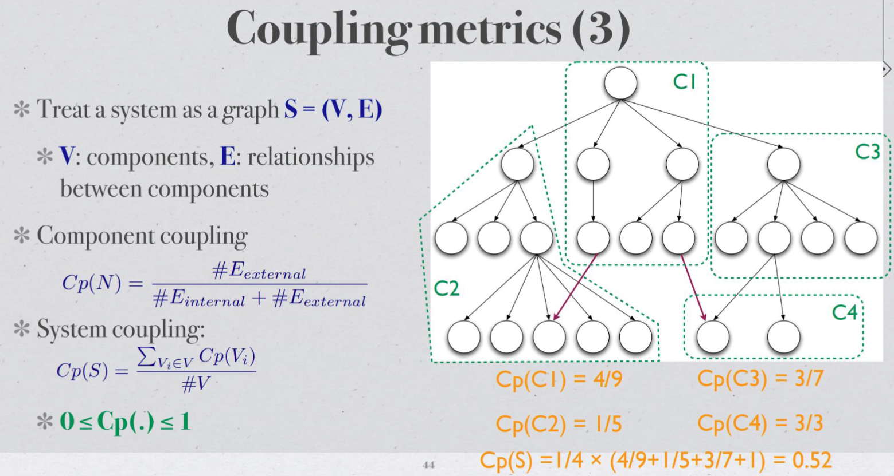
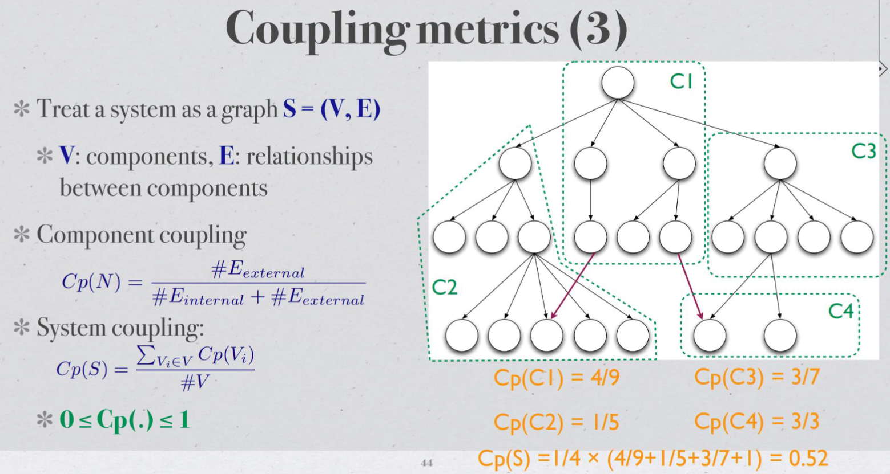
week9#
mutation testing 突变/变异测试#
Mutation operators
1. 通过一系列的规则生成新的Java 代码 类似<变<=; +变- ；i++变i--去掉call void method Remove condition 变if（true）
2. 使用新生成的代码跑现有的Unit Test，如果现有的test method有效 性非常高，所有的test必然失败 MT之后，test失败的越多，test method越好 MT是针对test的test，测试UT是否完备
3. MT生成的代码是根据Compile生成的代码而不是原代码 （不改变 source code）
4. Killing the mutation Each mutated version is called a mutant and tests detect and reject mutants by causing the behavior of the original version to differ from the mutant. This is called killing the mutant. 简言之，mutation test会在程序编译或运行时插入微小的差异(mutant)， 理想的测试用例应当能够检测出这些差异带来的程序行为异常。如果一 个mutant引发的程序行为异常能够被testcases捕捉并导致testcases失 败，则称mutant被消灭（killed）；反之如果mutant带来的程序行为变 化无法被测试用例捕捉，则称mutant存活（survived/ alive）
5. quivalent mutation a mutant cannot be killed by any set of test data. This type of mutants is said to be functionally equivalent to the originalprogram当改变任何测试数据，这个test都fail不了mutation叫做equivalent
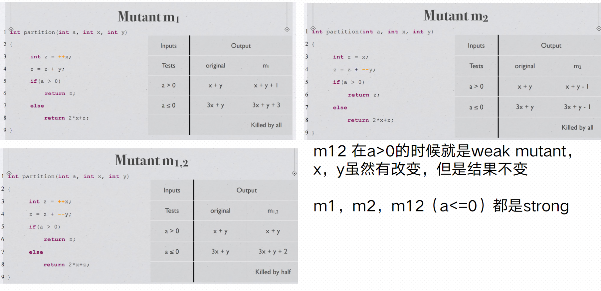
week11#
Finding threads- Finite State Machines#
 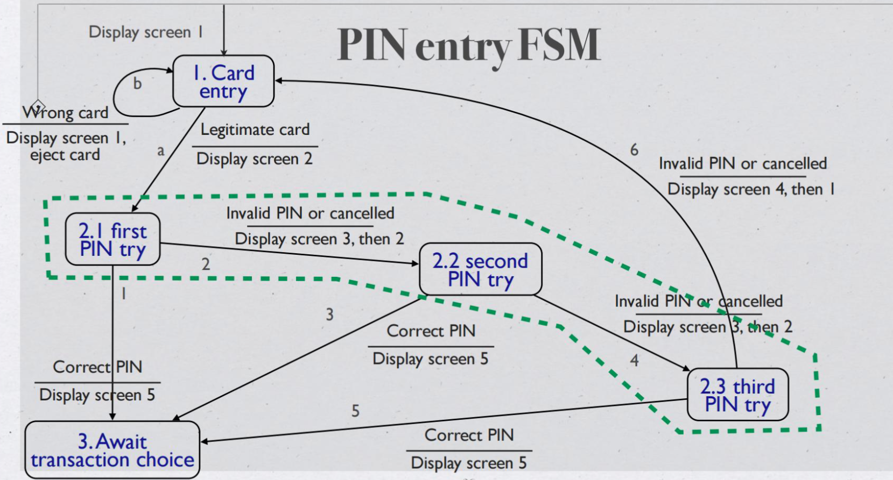
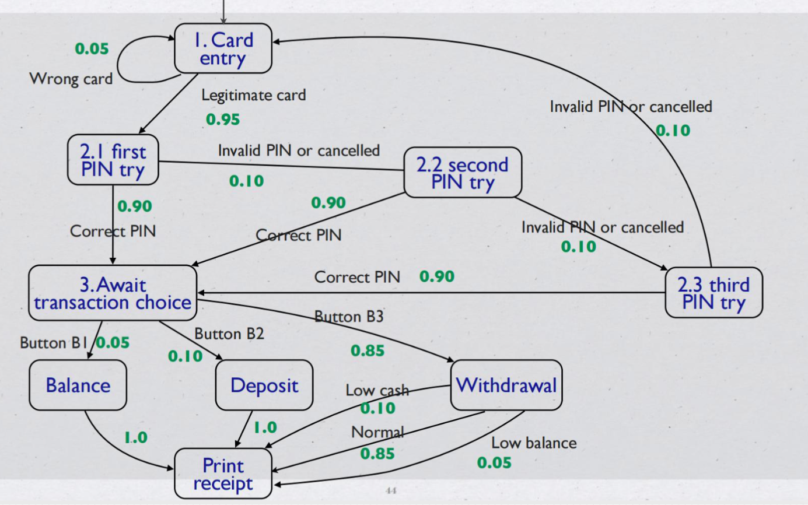
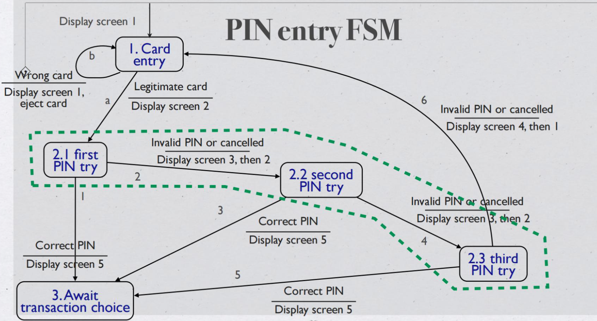
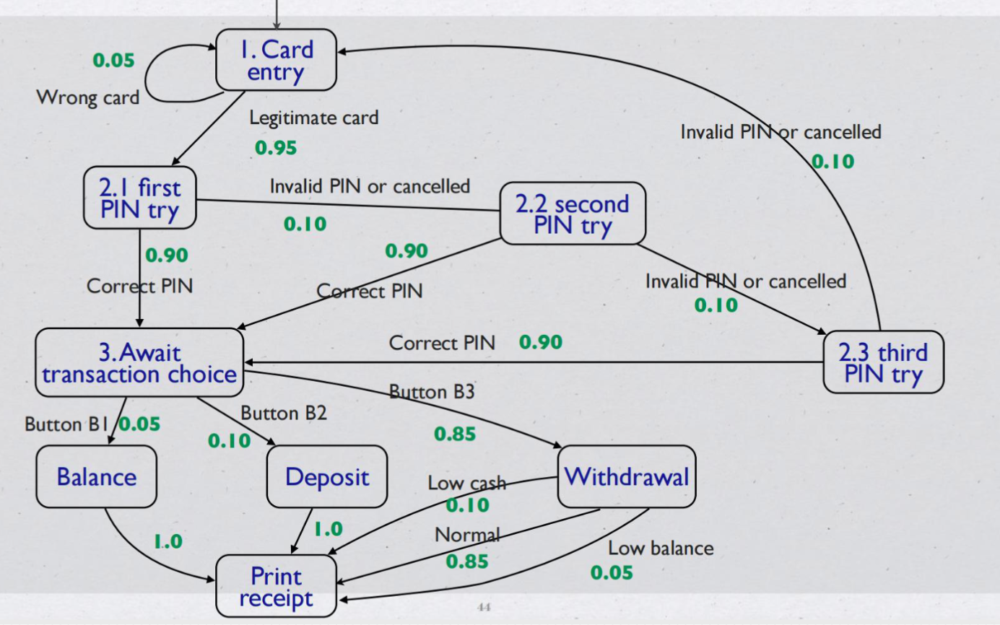
Mock exam#
Unit Testing#
Q1#
Consider a program FizzPrime that takes as input two non-negative integers, x and i, both between 0 and 100, both inclusive. The number x is a prime numbers. As output, the program prints the number i itself within the range ([0, 100]) when it is not divisible by x. For multiples of x, but not multiples of x^2, the program should print “Fizz” instead of the number. For multiples of x^2 but not multiples of x^3, the program should print “Prime”. Finally, for numbers which are multiples of x^3 the program should print “FizzPrime” instead. 考虑一个程序 FizzPrime，它将两个非负整数 x 和 i 作为输入，它们都在 0 到 100 之间，包括两者。数字 x 是质数。作为输出，程序在 ([0, 100]) 范围内打印不能被 x 整除的数字 i 本身。对于 x 的倍数，但不是 x2 的倍数，程序应该打印“Fizz”而不是数字。对于 x2 的倍数而不是 x3 的倍数，程序应该打印“Prime”。最后，对于 x3 的倍数，程序应该打印“FizzPrime”。
robust equivalence classes#
a) (5 marks) Develop robust equivalence classes for the input variables x and i given the above specification. a)（5 分）根据上述规范为输入变量 x 和 i 开发稳健的等价类
x
+ invalid:1. X < 0 ; X >100; x is not a prime number
+ valid: x >= 0 ,x<=100,x is a prime number
i
+ invalid:1. i < 0 ; i >100;
+ valid: i >= 0 ,i<=100
Equivalence (i, Fizz, Prime, FizzPrime)
R1 = {x,i is valid, i cannot be divided by x}
R2 = {x,i is valid, i canbe divided by x but cannot be divided by x^2}
R3 = {x,i is valid, i canbe divided by x^2 but cannot be divided by x^3}
R4 = {x,i is valid, i canbe divided by x^3}
R5 = {x <0 ,i is valid} R6 = {x >100, i is valid} R7 = {X is not a prime, i is valid}
R8 = {i <0 ,x is valid} R9 = {i >100, x is valid}
| test Case | x | i | Expected Output |
|---|---|---|---|
| R1 | 3 | 4 | 4 |
| R2 | 3 | 6 | Fizz |
| R3 | 3 | 9 | Prime |
| R4 | 3 | 27 | FizzPrime |
| R5 | -1 | - | Error input |
| R6 | 101 | - | Error input |
| R7 | 4 | - | Error input |
robust boundary value testing#
develop test cases using the robust (not worst-case) version of the boundary value testing technique
| Test Case | x | i | Expected Output | Explanation |
|---|---|---|---|---|
| 1 | -1 | 7 | Invalid input 输入无效 | Input x is less than the lower boundary (0-100), invalid. 输入 x 小于下限 （0-100），无效。 |
| 2 | 0 | 7 | Invalid input 输入无效 | Input x is less than the lower boundary (0-100), invalid. 输入 x 小于下限 （0-100），无效。 |
| 3 | 1 | 7 | Invalid input 输入无效 | Input x is less than the lower boundary (0-100), invalid. 输入 x 小于下限 （0-100），无效。 |
| 4 | 7 | 7 | Fizz 嘶嘶声 | i is equal to x, so "Fizz" is printed. i 等于 x，因此打印“嘶嘶声”。 |
| 5 | 99 | 7 | Invalid input 输入无效 | Input x is greater than the upper boundary (0-100), invalid. 输入 x 大于上限 （0-100），无效。 |
| 6 | 100 | 7 | Invalid input 输入无效 | Input x is greater than the upper boundary (0-100), invalid. 输入 x 大于上限 （0-100），无效。 |
| 7 | 101 | 7 | Invalid input 输入无效 | Input x is greater than the upper boundary (0-100), invalid. 输入 x 大于上限 （0-100），无效。 |
| 8 | 7 | -1 | Invalid input 输入无效 | Input i is less than the lower boundary (0-100), invalid. 输入 i 小于下限 （0-100），无效。 |
| 9 | 7 | 0 | 0 | Number i is not divisible by x, so it remains unchanged. 数字 i 不能被 x 整除，因此保持不变。 |
| 10 | 7 | 1 | 1 | Number i is not divisible by x, so it remains unchanged. 数字 i 不能被 x 整除，因此保持不变。 |
| 11 | 7 | 99 | 99 | Number i is not divisible by x, so it remains unchanged. 数字 i 不能被 x 整除，因此保持不变。 |
| 12 | 7 | 100 | 100 | Number i is not divisible by x, so it remains unchanged. 数字 i 不能被 x 整除，因此保持不变。 |
| 13 | 7 | 101 | Invalid input 输入无效 | Input i is greater than the upper boundary (0-100), invalid. 输入 i 大于上限 （0-100），无效。 |
Blackbox testing analysis/selection#
You have been given the task of performing blackbox testing on an implementation of the above algorithm. Of the main blackbox testing techniques we have discussed: boundary value testing (BVT), special value testing (SVT), equivalence class testing (ECT), and decision table-based testing (DTT), explain why each technique is(or is not) appropriate. 您的任务是对上述算法的实现执行黑盒测试。在我们讨论的主要黑盒测试技术中：边界值测试 (BVT)、特殊值测试 (SVT)、等价类测试 (ECT) 和基于决策表的测试 (DTT)，解释为什么每种技术是（或不是） ） 合适的
+ BVT: Not a appropriate, because not consider the x is a prime and output logic.
+ SVT: is appropriate, because consider the x is a prime and output logic.
+ ECT: is appropriate
+ DTT: is appropriate, it consider the out put logic
Q2#
The minimax algorithm is a way of finding an optimal move in a two-player game for one player, by minimising the possible loss for the worst case scenario (maximum loss). It has been widely used in 2-player zero-sum game plays. The algorithm for the depth limited minimax algorithm is given below. minimax 算法是一种通过最小化最坏情况下的可能损失（最大损失）来为一个玩家在两人游戏中找到最佳移动的方法。它已广泛用于 2 人零和游戏。下面给出深度受限极小极大算法的算法。
/*
minimax(node, depth, maximisingP layer)
Input: node B //Node where search begins.
Input: depth B //the maximum depth to search.
Input: maximisingPlayer //Boolean value representing the player for which the search is performed.
Output: the best value
*/
program graph#

cyclomatic complexity of the program graph#
C= E-V+2p E: 边的数量 N: 节点的数量 P: 连通分量的数量 Total branches (E) = 2 (for the first "if" statement) + 2 (for the second "if" statement) + N (for the "foreach" loop condition) 总分支 （E） = 2（对于第一个“if”语句）+ 2（对于第二个“if”语句）+ N（对于“foreach”循环条件） Cyclomatic Complexity = E - N + 2 = (2 + 2 + N) - N + 2 = 6
Q3#
program graph#
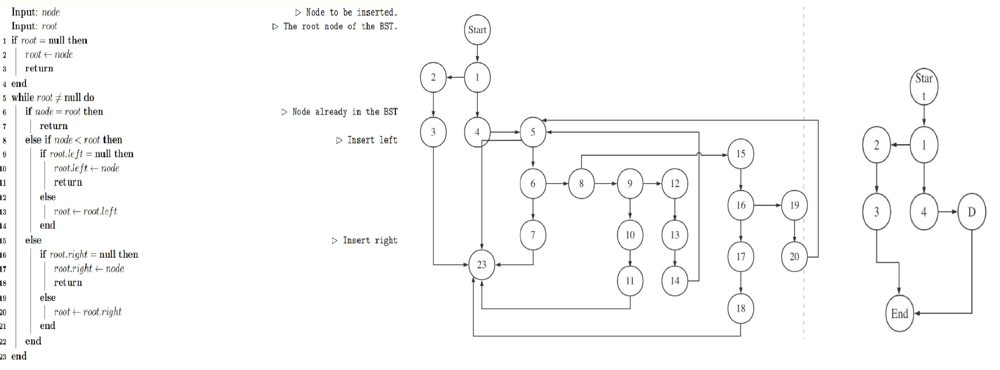
Cyclomatic complexity#
draw the final condensed graph for the program graph you came up with in part (a) above, and ii. calculate the Cyclomatic complexity of the condensed graph you draw
Q3#
Given an undirected graph G with vertices V = {1, 2, 3, 4, 5, 6, 7, 8} and edges E = {12, 14, 16, 22, 23, 28, 34, 35, 67, 78}
undirected graph/directed graph#

node degree#
Calculate the degree of each node in the graph. 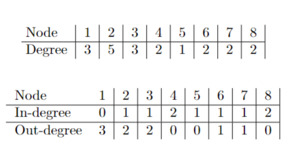
Cyclomatic number#
The Cyclomatic number of of G, V (G) = #E − #V + p = 10 − 8 + 1 = 3
source nodes or sink nodes#
Source nodes: 1 Sink nodes: 4, 5, 8
semi-paths#
Yes, (12, 23, 16, 67), (12, 28, 16, 67), and (12, 23, 34, 16, 67, 78) are semi-paths
x-connected node#
0-connected: none. 1-connected: 2 & 6, 3 & 7, etc. 2-connected: 1 & 2, 6 & 7, etc. 3-connected: none.
reachability matrix#
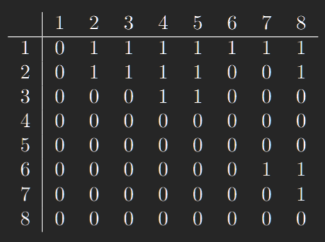
Integration Testing#
Q3 select reasonable integration method#
One of the goals of integration testing is to be able to isolate faults when a test case causes a failure. Consider integration testing for a program written in a procedural/object-oriented programming language. Rate the following integration strategies on their abilities of (1) relative fault isolation and (2) testing of co-functionality. You also need to provide a rationale for your answer 集成测试的目标之一是能够在测试用例导致故障时隔离故障。考虑对使用面向过程/面向对象的编程语言编写的程序进行集成测试。评价以下集成策略在 (1) 相对故障隔离和 (2) 协同功能测试方面的能力。您还需要为您的回答提供理由
Show your ratings graphically by placing the letters corresponding to a strategy on a line, as in the example below. Suppose that for the ability of fault isolation, strategies X and Y are about equal and not very effective, and strategy Z is very effective. Note that this rating is relative and qualitative, so don’t agonise over where exactly to put a strategy, but focus on their relative position.
A Big bang
B Decomposition-based top-down integration
C Decomposition-based bottom-up integration
D Decomposition-based sandwich integration
E Call graph-based pairwise integration
F Call graph-based neighbourhood integration (radius 1)
G Call graph-based neighbourhood integration (radius 2)
the ranking of fault isolation from highest to lowest: A is the worst. E>F>G. B≈C > D pairwise is from two random points but Decomposition only select one unknown pts.
Q2#
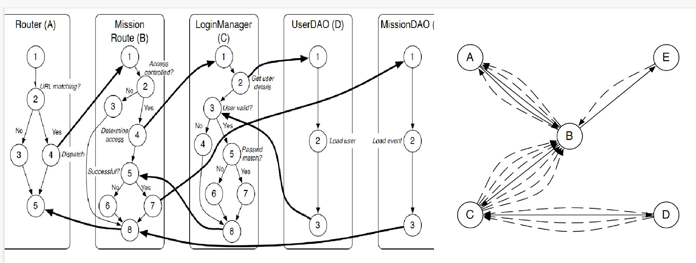
MM-paths#
For example, the MM-path for component D (UserDAO) is MEP (D, 1) = (1, 2, 3). The MM-path for component E (MissionDAO) is MEP (E , 1) = (1, 2, 3)
+ MEP(A,1) = (1,2,3,5) MEP(A,2) = (1,2,4) MEP(A,3) = (5)
+ MEP(B,1) = (1,2,3,8) MEP(B,2) = (1,2,4) MEP(B,3) = (5,6,8) MEP(B,4) = (5,7) MEP(B,5) = (8)
+ MEP(C,1) = (1,2) MEP(C,2) = (3,4,8) MEP(C,3) = (3,5,6,8) MEP(C,4) = (3,5,7,8
MM-path complexity#
5 edges between A and B 2 edges between B and E 4 edges between C and D 7 edges between B and C
The Cyclomatic complexity is V (G) = #E − #V + p = 18 − 5 + 1 = 14
Software Metrics#
Q4#
∃A, B : Program • M (A) + M (B) < M (A + B)
where M represents a given metric and A + B represents the composition of A and B
Given a program, the repeated application of the following two operations can be used to decompose it into a unique tree of structured programming constructs.
Sequence: composing two program graphs sequentially by merging one program graph’s terminal node with the other program graph’s initial node. For example, sequential composition of programs A and B is denoted by A; B.
Nesting: replacing one node in one program with the entirety of another program. For example, nesting program B in program A at node x of A is denoted by A(B, x).
The depth of nesting values of programs constructed by the above two operations are defined as below
Sequence: n(P1; P2; . . . ; Pn) = max(n(P1), n(P2), . . . , n(Pn)), and
Nesting: n(P1(P2; . . . ; Pn)) = 1 + max(n(P2), . . . , n(Pn)), where P2, . . . , Pn are sequentially nested inside P1
Pn sequence (n = 1, 2, . . .) D2 while loop D0 if-then D3 do-while loop D1 if-then-else Cn case-switch
The depth of nesting value for all the above constructs is 1 except for P1, which is 0. The depth of nesting value of a program is calculated in a bottom-up fashion.
For Weyuker’s property 9 and the metric depth of nesting n(P ) of a valid program P , do the following:
(a) State whether the property holds or not. (b) Prove your claim (informally).
Sequence:
n(A) = n(px) ; n(B) = n(py)
n(A+B) = n(px;py) =max(n(px),n(py)) == n(A) or n(b); n(A+B) <= n(A) + n(b}
Nesting:
n(A) = n(p1) = 0 ; n(B) = n(p2) = 1
n(A+B) = n(p1(p2)) = 1 + max(n(p2)) = 2 ; n(A) + n(B) < n(A+B)
Mutation Testing#
Q1#
The following Java method, min, returns the smallest of three integer parameters
1 public int min ( int a , int b , int c ) {
2 int temp = a ;
3 if ( b < a ) {
4 temp = b ;
5 }
6 if ( c < b ) {
7 temp = c ;
8 }
9 return temp ;
10 }
equivalent mutant#
come up with an equivalent mutant by applying a first-order mutation. In your answer, identify: 1. The mutation operator applied, 2. The associated statement to be changed, and 3. What the statement is changed to.
Mutation Operator Applied: Relational Operator Replacement
应用的突变运算符：关系运算符替换
This mutation operator involves changing the relational operator (e.g., >, <, = =, etc.) in a conditional statement.此突变运算符涉及更改条件语句中的关系运算符（例如， > 、 < 、 == 等）。
Associated Statement to be changed: Line 6 - if (c < b)要更改的相关语句：第 6 行 - if (c < b)
What the statement is changed to: We will change the < operator to <=, resulting in the modified statement: if (c <= b)语句更改为：我们将 < 运算符更改为 <= ，导致修改后的语句： if (c <= b)
non-equivalent first-order mutants#
devise a set of three test cases that achieves 100% statement coverage. Come up with three non-equivalent first-order mutants of the original program, making use one of the following mutation operators in each mutant. Determine the kill rate of your test suite on the three mutants. The mutation operators you can use are: ror Relational operator replacement. sdl Statement deletion. uoi Unary operator insertion.
| Test Case | Input | Expected Output |
|---|---|---|
| Case 1 | a = 5, b = 3, c = 7 | 3 |
| Case 2 | a = 4, b = 6, c = 2 | 2 |
| Case 3 | a = 1, b = 2, c = 1 | 1 |
| Mutant 突变体 | Operator 算子 | Description 描述 | Original Statement 原始声明 | Mutated Statement 突变声明 | Test Case Killed 测试用例被杀 |
|---|---|---|---|---|---|
| Mutant 1 突变体 1 | ror | Relational Operator Replacement 关系运算符替换 |
if (b < a) 如果（b < a） | if (b >= a) 如果 （b >= a） | Case 1, Case 3 案例 1、案例 3 |
| Mutant 2 变种人2 | sdl | Statement Deletion 语句删除 | if (c <= b) 如果 （c <= b） | delete line 删除行 | Case 1, Case 2 案例 1、案例 2 |
| Mutant 3 变种人3 | uoi | Unary Operator Insertion 一元运算符插入 | temp = c; 温度 = c; | temp = -c; 温度 = -c; | Case 2, Case 3 案例 2、案例 3 |
All MT be killed by test cases, so the rate is 100%
statement coverage#
is there a defect in the program? If so, develop the smallest set of test cases that achieves 100% statement coverage but does not reveal the defect. If not, develop the smallest set of test cases that achieves 100% statement coverage.
defect in the program is that it doesn't compare the value of a and c. if a=1,b=3,c=2.the result will be 2 instead of 1.
| Test Case 测试用例 | a | b | c | Expected Output 预期输出 |
|---|---|---|---|---|
| 1 | 1 | 3 | 2 | 1 |
| 2 | 3 | 2 | 1 | 1 |